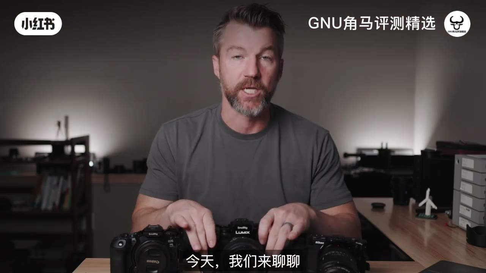
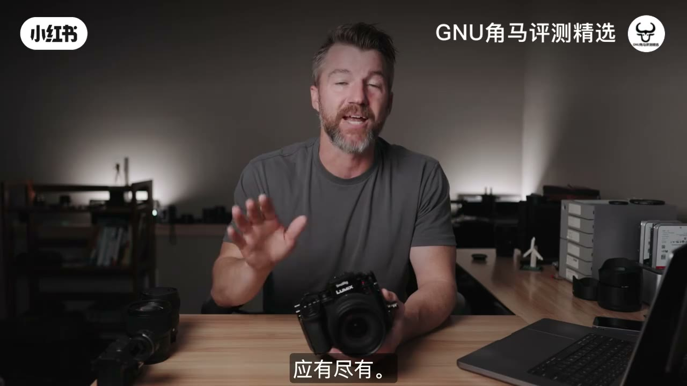
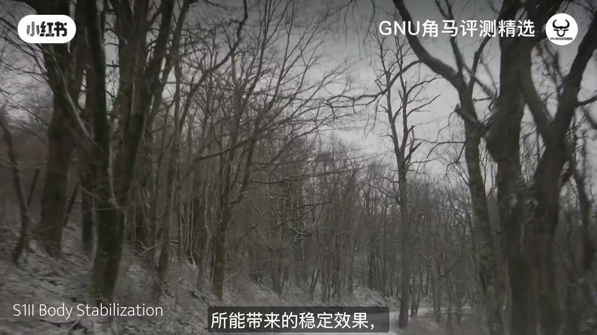
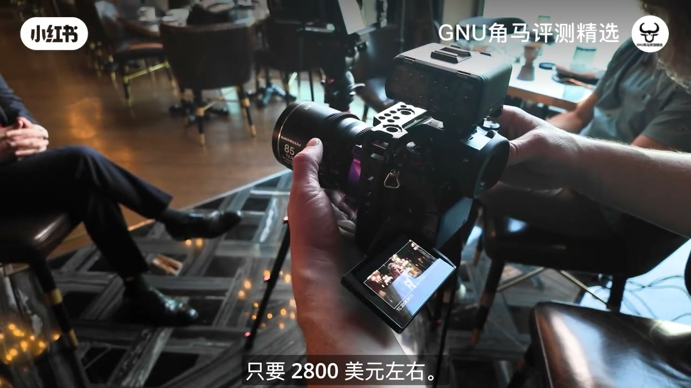
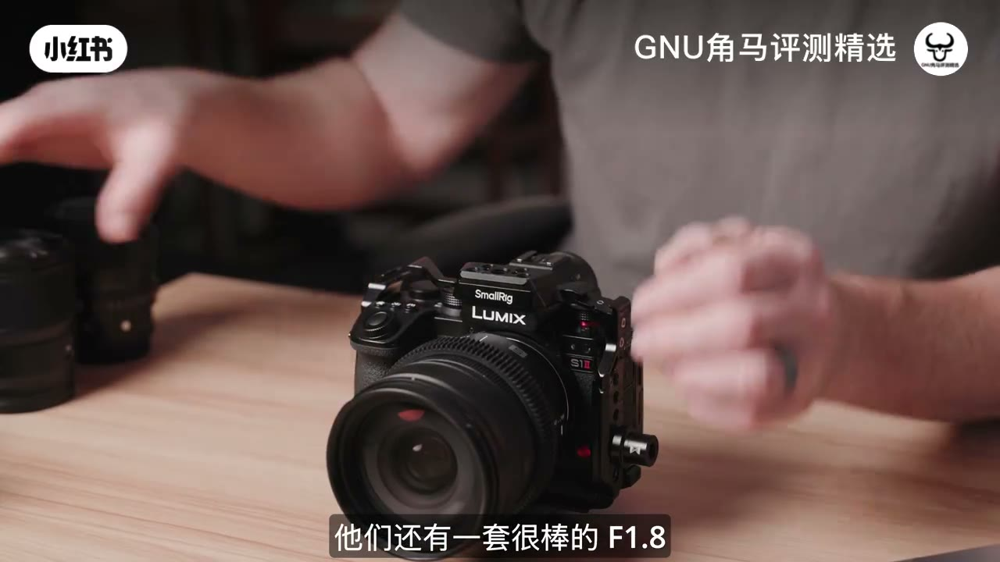
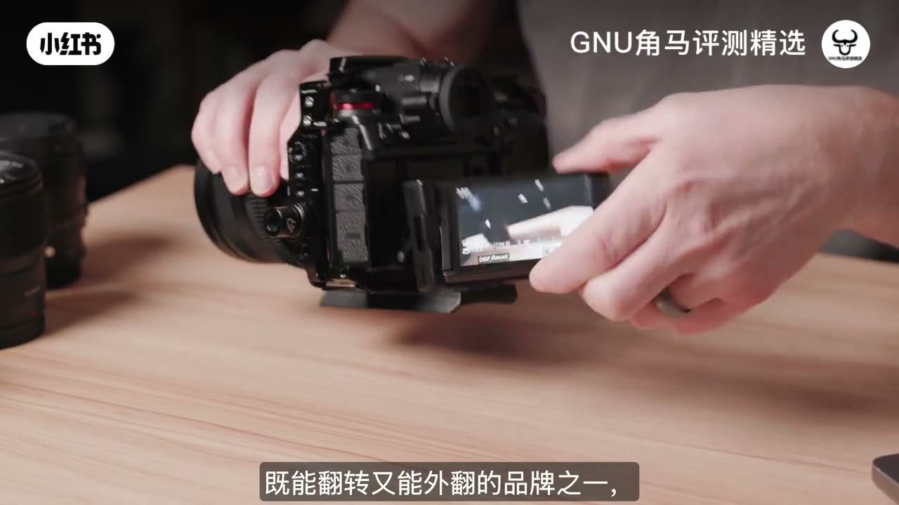
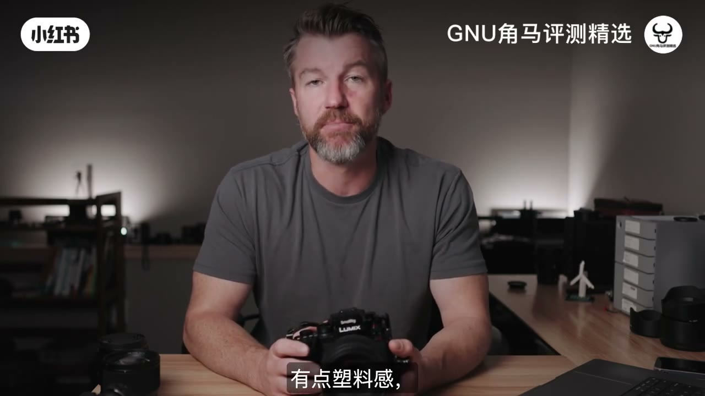
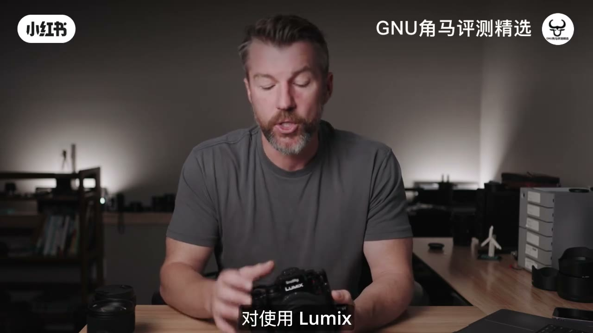
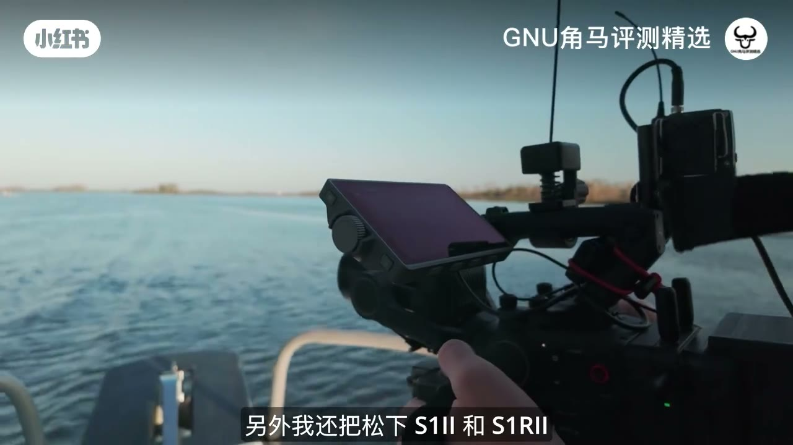
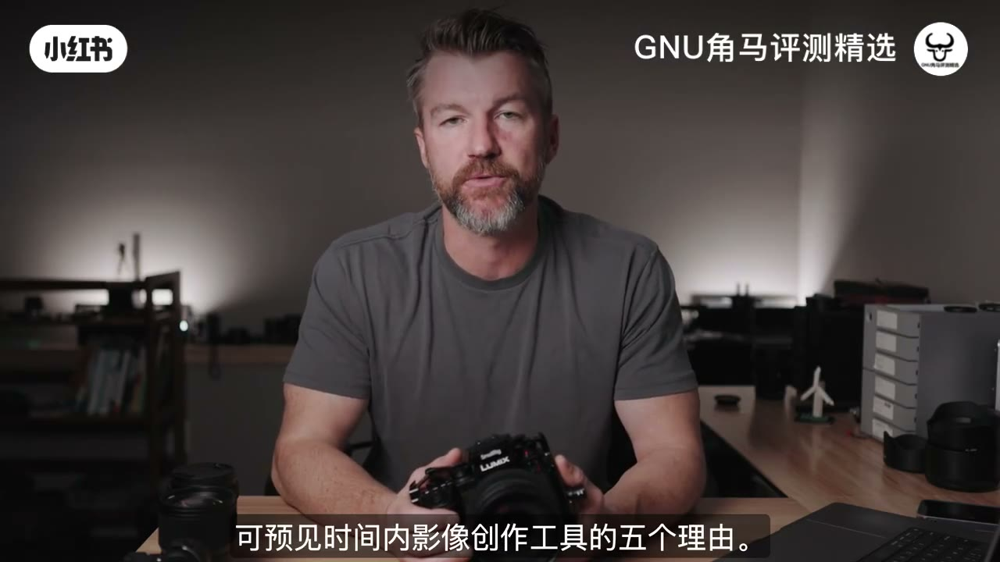

内容要点
12 年多品牌用户总结选 Lumix 五理由：机内 Codec/ProRes RAW、Open Gate 早布局、顶档 IBIS、对标 FX5 约半价、铰链屏与专业接口；并坦陈知名度与更新慢两个顾虑。
知识结构
GH5→Varicam 线收缩后转向 Lumix。
ProRes RAW；Open Gate 非跟风。
IBIS 强；S1II≈半个 FX5。
铰链不挡口；接口与外录齐全。
知名度弱；更新慢或成保值。
功能与价格打满；商业片要过「客户认不认品牌」这关。
00:00–01:10为什么是 Lumix
作者称 12 年几乎用遍主流影像品牌。与 Lumix 的缘分从 Panasonic GH5 开始——早期就能机内 10bit 4:2:2 4K，适合小云台；也曾用 Varicam LT、EVA-1。电影机线收缩后，重心转到 Lumix 全幅系列。以下五个理由解释「做影像为什么还选它」。

01:10–02:40① Codec ② Open Gate
理由一：机内编码选项极多——从 10bit 到 ProRes，再到机内 ProRes RAW，并含变形相关模式。理由二：Open Gate。索尼 FX 系才热起来时，Lumix 用户已玩很久；全幅约从 2019 年 S1H 起就有，后续 S1II / S1RII 做到 6K/8K Open Gate。好处是可裁更高画幅的竖屏 9:16，也更吃变形头。


02:40–05:15③ IBIS ④ 性价比
理由三：机身防抖。GH 世代就以 IBIS 出名，全幅 S1II / S1RII 仍是作者心中市面最强档之一；另有电子稳，且宣称不硬裁画幅——手持纪录片/跑动很吃这套。理由四：价格。对标刚更新的 FX 系，S1II 特价大约 2800 美元量级，功能接近却约一半价；再配 XLR 套件可拿 4 声道 32-bit float。S1RII 高像素仍压竞品旗舰价；二手 S5 / S1H 打开门更低。



05:15–07:10⑤ 设计与接口
理由五：整体设计与功能密度。铰链式翻转监视器是作者最爱——可拆开角度且不挡侧边接口（对比部分尼康 ZR / 索尼机：大屏好看却常挡口）。顶板 ISO/白平衡/拨盘手感像专业工具；另有 Blackmagic RAW 外录、SSD、全尺寸 HDMI、多声道音频等。L 卡口开放联盟 + Sigma / Viltrox 等，镜头选项不再是硬伤。


07:10–09:36两个顾虑（也可能是优点）
① 业内知名度：接片/客户习惯索尼佳能 RED ARRI，报 Lumix 常被要求换机——不如当年 Varicam 名头好认；个人项目可硬刚，商业片要多沟通。② 更新节奏慢：往往四五年才一轮，不如索尼佳能两年一刷；作者反而当成保值——未来两年不太会被新品立刻「取消」，同价位寿命感更强。结论：作为拍摄工具，作者未来两年仍选 Lumix。


完整转录（395段）
Whisper medium · 中文 · 已做术语校正，仍可能有识别误差。
在我12年的过程中,我已经使用了几乎每一种不同的摄影品牌
所以我将与大家分享我认为最好的原因
选择了每个主要四个摄影品牌
Canon、Sony、Nikon和Lumix
今天我们将谈论五个原因
为你选择Lumix的摄影品牌
我的关系与Lumix开始于Panasonic GH5
我买了它因为它是第一个10bit 422的4K镜头
我需要一张小的Gimbal镜头
为我的国际摄影品牌拍摄我的红色Helium
这张镜头很棒,它有很厉害的IBIS
相比起我的红色Helium,这张镜头的影像比较好看
所以它能够非常好拍摄
这张镜头也能拍摄我的最喜欢的照片
我还使用了Panasonic VARACAM LT
并且持有了Panasonic EVA-1
它仍然是唯一能买到的最受欢迎的镜头
但Panasonic已经离开了它们的高级镜头
所以现在如果你想使用其他镜头
就要去看Lumix系列了
幸运的是它们在过去一半的一年之内
都放出了一些很棒的电影镜头
所以这里有五个原因
为你选择Lumix为你的电影工作
第一个原因就是Lumix镜头有很多Codec选项
就像我说的,GH5是第一个10bit 422的4K镜头
这只是为了一个很漂亮的照片
但是自从它们放出了很多Codec选项
从10bit 422到ProRes到ProRes RAW
之类的
所以如果你想使用这些镜头
就要确定,你会有很多Codec选项
在镜头里
这包括了Anamorphic模式
也包括了OpenGate
这是第二个原因
在过去几个月之内
有很多人在聊天
关于Sony FX5
还有OpenGate
多么的精彩
所有Lumix拍摄者都在看
大家,我们已经从2017年开始拍摄了这些镜头
这也蛮疯狂的
不仅如此
但在全 frame 镜头上
Lumix已经在2019年的Panasonic S1H拍摄
所以他们在过去几年之内都在拍摄OpenGate
他们在过去几年之内只拍摄了S12和S1R2
这些镜头有6K和8K的OpenGate
OpenGate很棒
因为它能让你拍摄更高的镜头
所以如果你是在社交上工作
你会有那种高的9x16的镜头
但它也很适合拍摄
我已经拍摄了很多Lumix的镜头
包括Laowa Nanomorphs
Blazar Remus
以及DZO Arcanas
这些镜头让OpenGate很棒
所以有超级的Codec选项
包括OpenGate
是两个主要的原因
使用Lumix的镜头
但是第三个,应该最重要的
是在Lumix的镜头的内部执行
Panasonic已经被称为
有超级的IBIS和镜头
像是GH5、GH6和GH7
但即使用了一个更大的
Full Frame Sensor
这些镜头有最好的IBIS
在市场上
你能够获得Panasonic S12
和S1R2的执行
是一个很厉害的技术
不仅如此
它们还带了一个
Digital Stabilization
让你获得
更多的Digital Stabilization
在IBIS上
但它却没有Crop
其他制造者
还没有解决如何做
但在95%的情况下
在镜头中的IBIS
通常是足够好的
尤其是在做手机工作
或者拍摄一部电影
第四个理由选择Lumix
是这些镜头的价值
非常令人印象深刻
尤其是当你看到
像Fx5的镜头
刚刚宣布的
和S12一样的镜头
所以这个镜头是5K
是内部Raw
是IBIS
和其他小小的
鸟鸣鸣
你能想象到的
像Fx5的镜头
但S12也有
这些镜头
而且通常售价
大概2800美元
所以在几乎一半的价值上
你能拿到Lumix S12
和Fx5相比
现在Fx5
有几个更多的技术
例如XLR手机
或是有维修的时间软件
但这些镜头
有时间软件
和Bluetooth
希望这些镜头
会比以前的更好
但你还可以拿到
4频音频
和32bit float
和XLR2
由Panasonic
因此
这些镜头
有一个迷你Fx5
但有6K
而不是5K
这些镜头
还可以拿到很棒的照片
但Fx5不能做到
你还可以拿到
一个超级的44MP镜头
S1R2
价值少于3000美元
而最高端的
40MP镜头
将近4000
或者更多的
任何其他制造者
还有一个很棒的
F1.8 Prime
都是同样的尺寸
和重量
而且也很便宜
所以你还可以
拿到很棒的相机
和Lumix的镜头
可能是
一半的价值
像是Sony
或者Canon
有相似的尺寸
不仅是
新的镜头
比较便宜
与比赛相比
Panasonic也很便宜
在用户市场上
如果你有Panasonic S5
S5II
S1H
你还可以
花近800-1000美元
还有那些
机内录音/编码选项
你必须要付6000美元
为一个FX5
最后
我选了Lumix
和其他其他品牌
的第五个原因是
它们的整体设计
和功能
包含在这些镜头上
甚至像是
Monitor Hinge
Lumix是第一个做到的
调调调
和翻转
你见到的
S1H
GH6
GH7
现在是S1R2
S1II
只是我见过的
最好的制作
它非常好
因为你能够
拆开它
并不阻挡
你用的接口
在旁边
这一直是
Nikon ZR
或者很多Sony的镜头
尽管ZR屏幕
很大和美
但它总是阻挡接口
让它有点
麻烦使用
很棒的设计
我还喜欢Lumix的
设计和建设
它们有准备
它们有准备
它们有很棒的
按钮位置
在上面
你能够取得
ISO
白色平衡
和接口的费用
所有东西
都非常完整
实际上
它们就像是
一个专业的工具
有时候
我感觉Canon
感觉比Sony
还要便宜
同样是Sony
在很多情况下
除此之外
你还能够
录取
Blackmagic RAW
有SSD录音
SSD能力
Full size HDMI
4-channel audio
32-bit float
如果你拿到XLR
还有很多
其他超级的功能
它们包含在这些摄像机
所以为了价钱
这些摄像机
有最多的功能
没问题的
一些Lumix的批评
就是它们
没有极限的镜头选项
但L-mount
是一个开放的联合
所以你能够购买
很多的镜头
所以你不需要
拿到Panasonic的镜头
像这个
85mm f1.8
或者24-62mm f2.8
但所有Sigma的
新的镜头
都在L-mount
类似镜头
Viltrox
刚才加了L-mount的联合
所以真的有很多
镜头选项
所以这不再是
批评了
但两个原因
我会有点担心
用Lumix的镜头
在我的专业工作上
第一个原因
是专业的计划
也就是Lumix
并不是一个
有名的品牌
当你试图
把你的镜头
购买给你
拍摄的装备
例如
如果我购买
DP的
一部电影
由一家制作公司购买
或者是一家购买
或者只是
拍摄一天
或两天
购买给另一个DP
他们经常会问
你购买的镜头
如果你说Lumix
他们会说
我们购买你一些东西
因为他们
都习惯用
Sony和Canon
Red或Ari的镜头
而Lumix
就没有
同样的名字认识
当Panasonic
在Cinema游戏上
用了Varicam LT
EVA1
和Varicam35
那些镜头
就比较容易
选择
那些镜头
但Lumix
并不是
专业的计划
在拍摄
高端的
拍摄文章
或者DocSeries
然而
我认为
S1H
和Canon C300
是一部车辆的计划
我还使用了Panasonic S12和S1R2
和DJI RONIN 4D
作为其他计划
正在拍摄
所以你能够
拍摄它
但只需要
比较诚实的时间
最后
Lumix
就比Canon、Nikon和Sony
还要慢
它们只是
拍摄和销售的
数量
所以
如果你购买Lumix
就不会得到
每一年多的更新
这可能是一个好事
S1R2
现在差不多2岁了
S1R2
一年半
它们还没出现
任何新的摄影机
所以
如果你购买这些系统
你可能只能得到
每四、五年多的更新
而Canon和Sony
通常是每两、三年
但这可能是一个好事
因为我真的看不见
Panasonic S12
被任何新摄影机
在未来两年之内
被取消了
所以当S1H2
或S1R2
出现
它们仍然会
过年来
Sony FX5
基本上
就像这部摄影机
两年之后
但仍然是一半的价值
所以
我选择Lumix的摄影机
是我的拍摄工具
在未来两年之内
如果你想购买Lumix的摄影机
可以在下面的描述栏
通过我的合作伙伴
Adorama
使用这些链接
真的帮助我的频道
让我能继续做这些视频
以及我拍摄的
职业建议
和拍摄建议
所以
记得使用这些链接
然后我还放了一列
我最喜欢的配件
为这些摄影机
包括小三脚
这些F1.8 Primes
XLR盘
还有很多其他
所以购买这些链接
我会在下一个视频里见到你